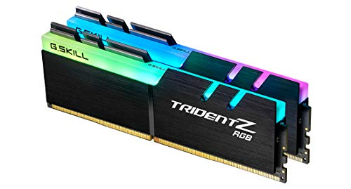

La tarjeta madre es la plataforma principal que conecta y permite la comunicación entre todos los componentes del sistema
es quien se encarga de la búsqueda, interpretación y ejecución de instrucciones.

La tarjeta gráfica es uno de los componentes más críticos para los juegos, ya que procesa los gráficos y las imágenes.

La memoria de acceso aleatorio (RAM) es importante para el rendimiento general del sistema.

Un SSD (unidad de estado sólido) es preferible para el sistema operativo y los juegos, ya que proporciona tiempos de carga más rápidos en comparación con los discos duros tradicionales.
Una fuente de alimentación de calidad y con la potencia adecuada es esencial.

Los sistemas de enfriamiento son cruciales para mantener las temperaturas bajo control.
Una caja bien ventilada y espaciosa puede ayudar a mantener los componentes frescos y permitir una fácil expansión en el futuro.
Periféricos: Esto incluye teclado, ratón, monitor, auriculares y otros accesorios según tus preferencias personales.

Necesitarás un sistema operativo para ejecutar tus juegos y otras aplicaciones.
Windows es la opción más común para los jugadores debido a la compatibilidad con la mayoría de los títulos.